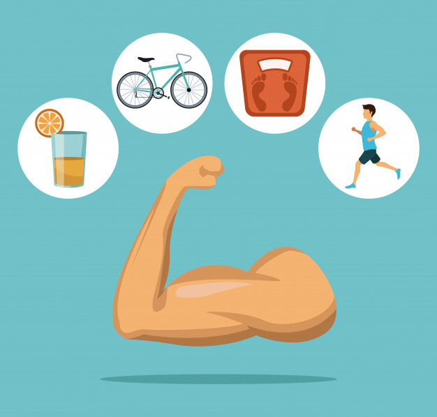

html,body{ max-width: 100%; overflow-x: hidden; } li{ font-weight: bold; }
Gain weight

-
Find out what the right weight is by subtracting 100 cm from your height. For example if your height is 165 cm then your weight should be 65 kg. Here are the foods you should eat to increase your body weight.
-
Eggs are high in calories, fat and protein. The white of the egg has the power to increase body weight. Your weight will naturally increase if you eat 3 or four egg whites daily for a month
-
Bananas are high in calories. Also, bananas are high in carbohydrates and potassium, which can give you more energy. Eating a banana with a glass of milk every morning has the potential to increase body weight. Mango and Milk: If you drink milk with mango
3 times a day, you can clearly see that you have gained weight in a month
-
Potatoes are high in carbohydrates. So eating potatoes will give good results. To get more good results, you can cook it with butter along with the potatoes.
-
: Put dried figs and grapes in water at night and eat the next day to gain weight automatically. You will notice an improvement in your weight within 20 days as it is high in calories.
-
Butter is generally high in fat and calories. You will notice a change in your weight if you eat a spoonful of butter and a spoonful of sugar together 30 minutes before lunch and dinner daily for 30 days